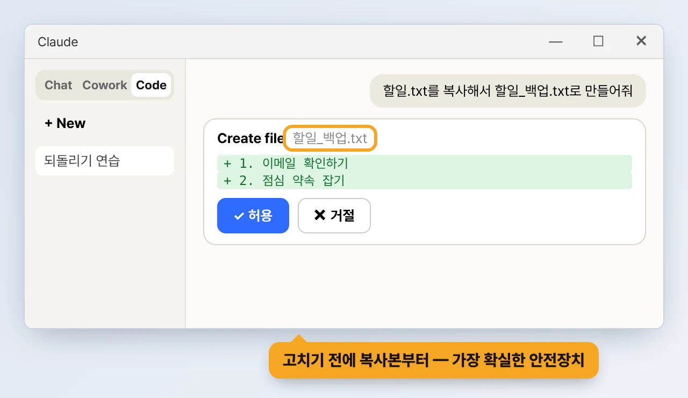
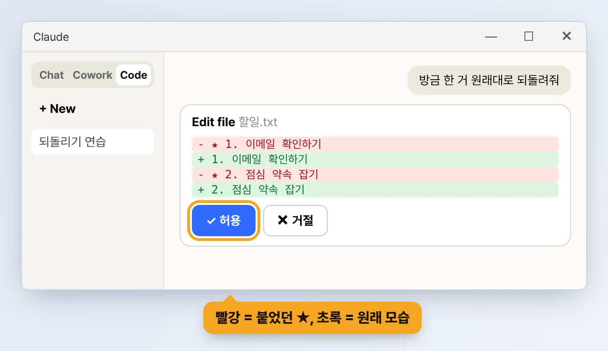
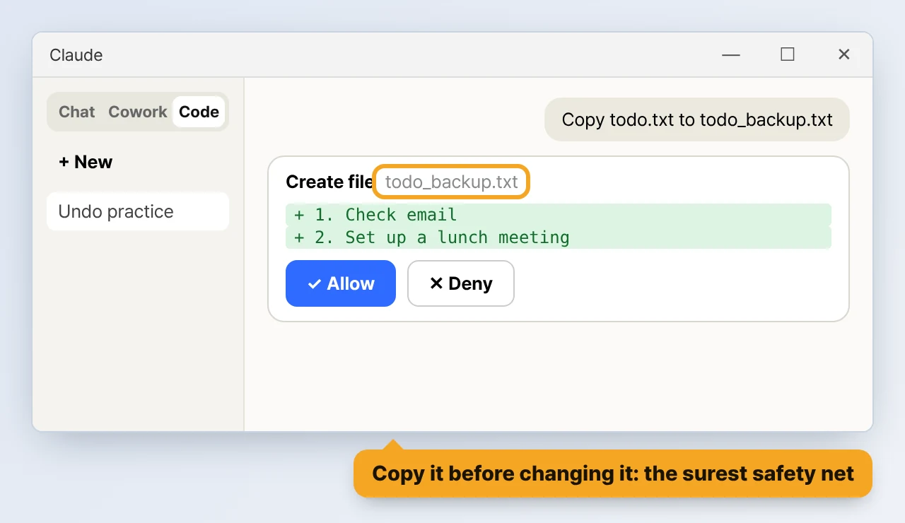
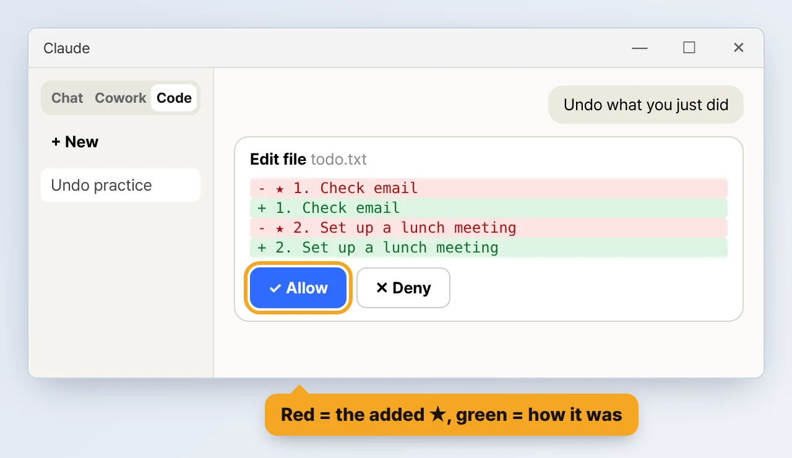

👆 이 내용은 버튼 따라 하는 실습으로도 있어요. 처음이라면 실습으로 직접 해 보고, 이 글은 복습할 때 보세요. 실습 시작하기 →
※ 글 속 그림은 따라 하기 쉽도록 그린 예시입니다. 실제 앱 화면과 모양·글자가 조금 다를 수 있어요.
오늘 새로 배우는 것
Claude도 가끔 부탁과 다르게 고쳐요. 내가 잘못 부탁할 때도 있고요. 오늘은 잘못 바뀐 걸 되돌리는 법을 미리 연습해 둬요. 안전장치는 세 겹이에요.
| 언제 | 어떻게 |
|---|---|
| 허락 전 | 허락 카드에서 거절 (2편에서 배움) |
| 허락 후 | 같은 대화에서 Claude에게 "원래대로 되돌려줘" |
| 미리 | 중요한 파일은 복사본을 만들어 두기 |
1. 새 대화로 시작하기
+ New로 새 대화를 열고, 입력 칸 아래가 Local · 연습 · Manual인지 확인하세요. 5편에서 다른 방식으로 바꿨다면 Manual로 되돌려 주세요.
2. 고치기 전에 복사본 만들기
할일.txt를 복사해서 할일_백업.txt로 만들어줘
허락 카드를 읽고 허용. 파일 만들기 카드 대신 명령 실행 카드가 나올 수도 있어요. 설명이 '복사'라면 허용하면 돼요.
3. 일부러 이상하게 바꿔 보기
할일.txt의 모든 줄 앞에 ★를 붙여줘허용한 뒤 할일.txt를 열어 ★가 붙었는지 보고, 메모장은 닫아 주세요.
4. Claude에게 되돌려 달라고 하기
방금 한 거 원래대로 되돌려줘
Claude는 이 대화에서 자기가 무엇을 바꿨는지 기억해요. 되돌릴 때도 허락 카드가 나오니, 빨간 줄에 ★가 붙은 줄, 초록 줄에 원래 줄이 보이면 허용.
잘 안 돌아왔다면 복사본을 쓰세요: "할일_백업.txt 내용으로 할일.txt를 되돌려줘".
5. (선택) /undo 입력해 보기
Claude Code에는 Claude가 고친 파일을 이전 시점으로 되돌리는 메뉴가 있어요. 입력 칸에 /undo(또는 /rewind)를 입력해 보세요.
| 메뉴 | 뜻 |
|---|---|
| Restore code | 파일만 그 시점으로 |
| Restore conversation | 대화만 그 시점으로 |
| Restore code and conversation | 둘 다 |
| Never mind | 취소 |
데스크톱 앱 버전에 따라 이 메뉴가 없을 수 있어요. 없어도 괜찮아요. '되돌려 달라고 하기'와 '복사본'이면 충분해요.
되돌리기 어려운 것
- 명령으로 지운 파일: 휴지통에 남지 않을 수 있어요. 지우라고 하지 않았는데
rm·del이 보이면 거절하세요. - 명령으로 옮기거나 이름을 바꾼 파일: 되돌리기 메뉴가 기억하지 못해요. "원래 자리로 옮겨줘"라고 부탁하세요.
- 다른 대화에서 한 일, 내가 직접 고친 것: Claude가 모를 수 있어요.
오늘 배운 것
- 허락 전엔 거절, 허락 후엔 같은 대화에서 "원래대로 되돌려줘".
- 중요한 파일은 복사본부터 만든다.
- 지우기·옮기기 명령은 되돌리기 어렵다. 허락 전에 더 꼼꼼히 읽는다.
※ The pictures in this guide are illustrations to make it easy to follow. The real app may look a little different or use different words.
What you'll learn today
Claude sometimes changes things differently from what you asked, and sometimes you ask for the wrong thing. Today you'll practise undoing a change before you ever need to. There are three layers of safety.
| When | How |
|---|---|
| Before allowing | Deny on the permission card (from guide 2) |
| After allowing | In the same chat, ask Claude to "undo that" |
| In advance | Make a copy of important files |
1. Start with a new chat
Open a new chat with + New and check that the buttons under the typing box show Local · Practice · Manual. If you switched modes in guide 5, switch back to Manual.
2. Make a copy before changing anything
Copy todo.txt to todo_backup.txt
Read the permission card and click Allow. You may see a run-command card instead of a create-file card. If the description says it's copying, allow it.
3. Change it oddly on purpose
Put a ★ at the start of every line in todo.txtAfter allowing it, open todo.txt to see the ★s, then close Notepad.
4. Ask Claude to undo it
Undo what you just did
Claude remembers what it changed in this chat. Undoing also shows a permission card: if the red lines have the ★s and the green lines are the originals, click Allow.
If it didn't go back, use the copy: "Restore todo.txt from todo_backup.txt".
5. (Optional) Try typing /undo
Claude Code has a menu that rolls Claude's file edits back to an earlier point. Type /undo (or /rewind) in the box.
| Menu item | Meaning |
|---|---|
| Restore code | Only the files, to that point |
| Restore conversation | Only the chat, to that point |
| Restore code and conversation | Both |
| Never mind | Cancel |
Depending on your desktop app version, this menu may not exist. That's fine; asking it to undo plus keeping a copy is enough.
Things that are hard to undo
- Files deleted by a command: they may not go to the Recycle Bin. If you see
rmordeland didn't ask to delete, deny it. - Files moved or renamed by a command: the undo menu doesn't track them. Ask, "Move it back where it was."
- Work from other chats or edits you made yourself: Claude may not know about them.
What you learned today
- Before allowing, Deny; after allowing, say "undo that" in the same chat.
- Make a copy of important files first.
- Delete and move commands are hard to undo, so read those cards extra carefully.